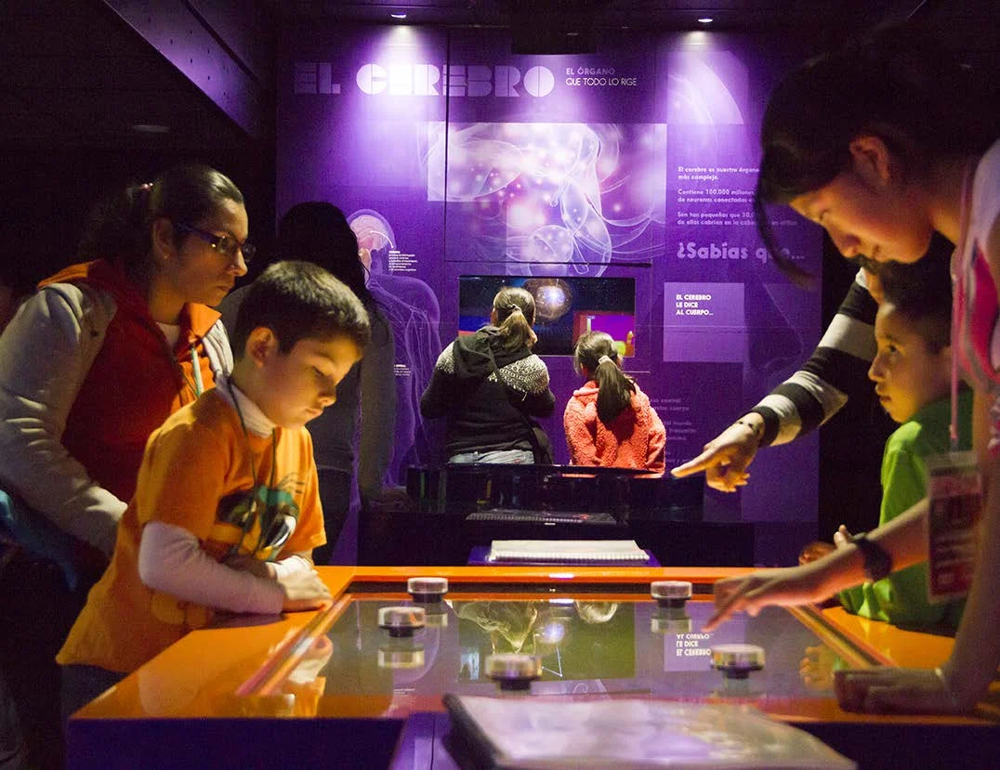
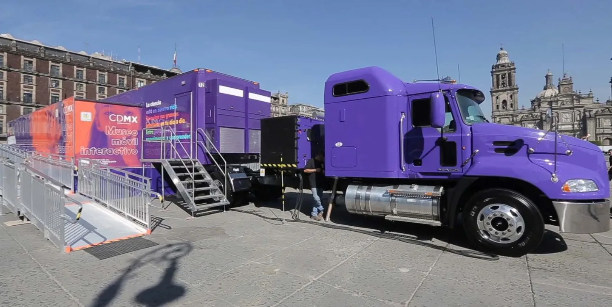
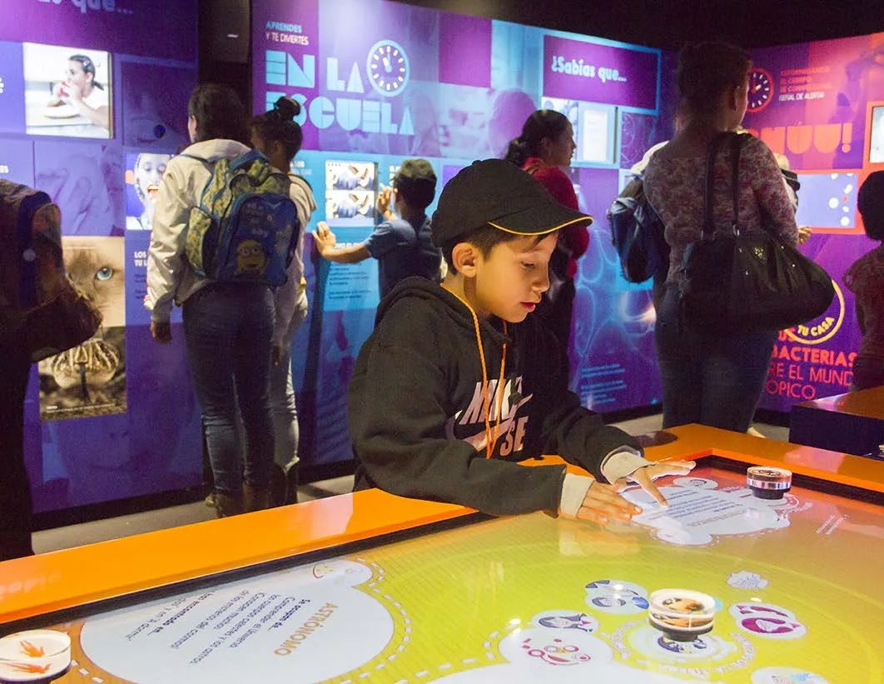

Cultura y museografía
Vive la Ciencia · Museo móvil interactivo
Secretaría de Ciencia y Tecnología · Ciudad de México · 2015
Mi aportación. Dirección de Optimus y coordinación de equipos

01
Contexto
Un museo móvil concebido para acercar la ciencia a los distintos distritos de Ciudad de México.
02
Necesidad
Llevar contenidos científicos cotidianos a un formato itinerante, comprensible y participativo.
03
Estrategia
Al frente de Optimus, coordiné el trabajo del equipo responsable del diseño y la producción integral. El museo combinaba un camión expandible, contenidos breves y recursos interactivos y audiovisuales.
04
Impacto
El museo se puso en circulación en 2015. Recibió el Roy L. Shafer Leading Edge Award de ASTC en 2016, en Visitor Experience para instituciones pequeñas. El reconocimiento corresponde al museo, no a un premio personal mío.


Créditos y alcance
Promotor: Secretaría de Ciencia y Tecnología de México DF. Diseño y producción: Optimus Medina Riley y su equipo.
¿Qué tienes entre manos?
Podemos empezar por una necesidad concreta o por una idea que aún necesita forma.